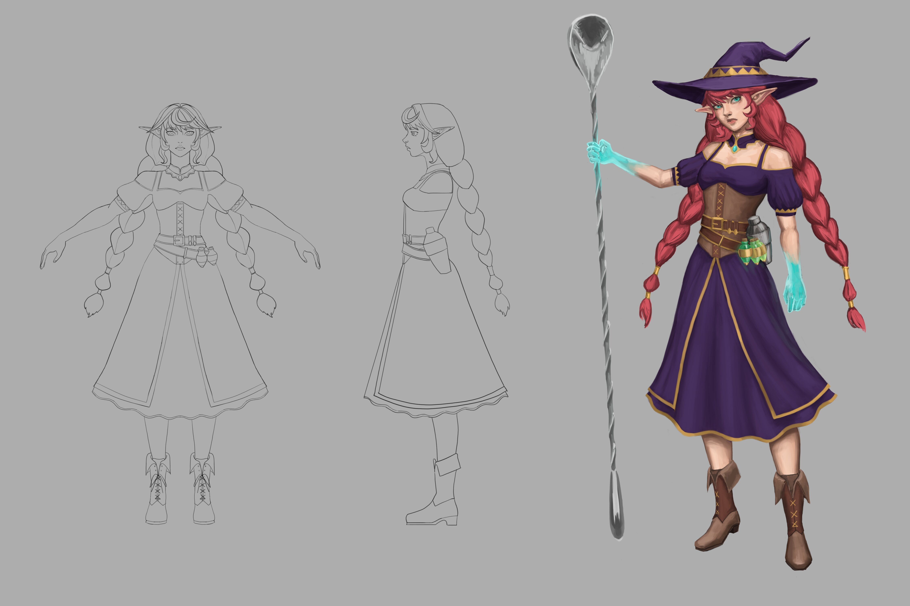
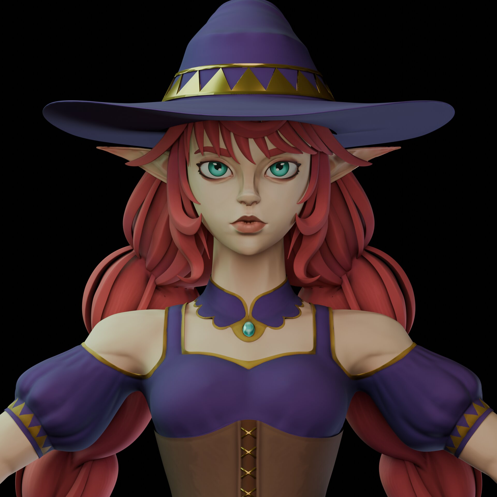
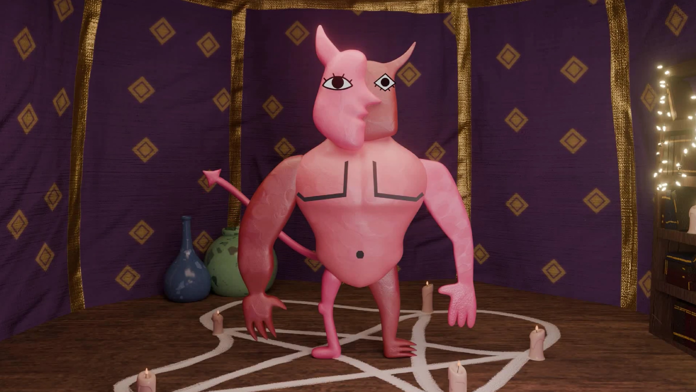

Witch Bartender
A character design project with the goal of making a 3D figure model, a splash illustration, and learning the basics of handpainted texturing.




The Amateur Summoner
A 3D short animation created in a time crunch from start to finish of about one month. All assets are made by hand, minus a few sounds from FreeSound.
Link to watch
